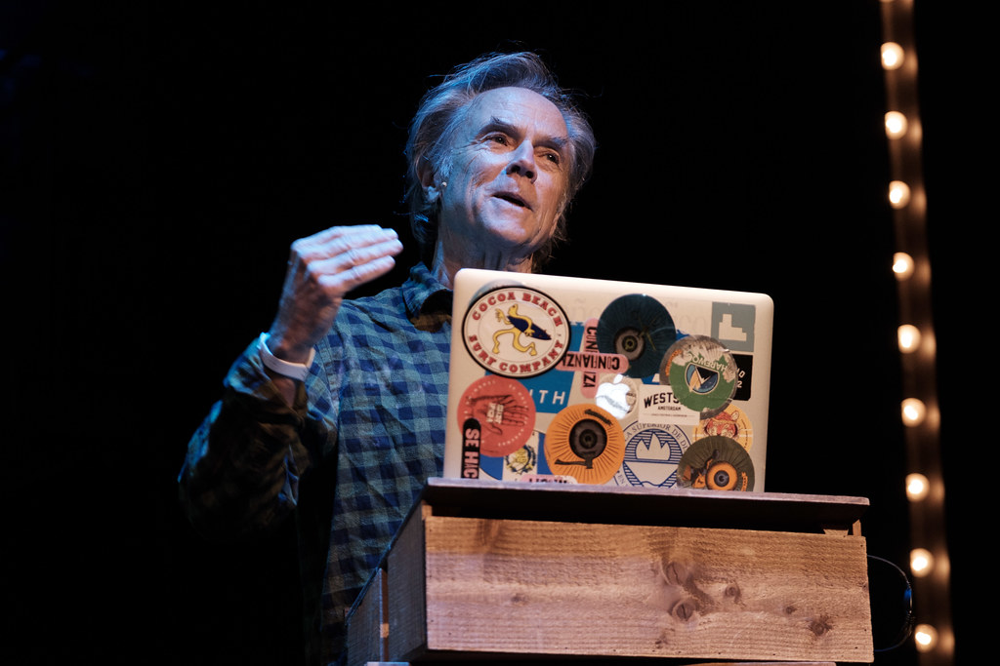
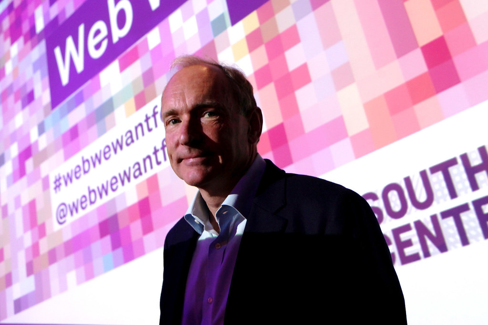

Art
Artists
Jean-Michel Basquiat
Salvadore Dalí
Frida Kahlo
Susan Kare
And with it all, good design's not about what medium you're working in, it's about thinking hard about what you want to do and what you have to work with before you start.
Image from Irina
Design
Designers
Neville Brody
David Carson
I'm a big believer in the emotion of design, and the message that's sent before somebody begins to read, before they get the rest of the information; what is the emotional response they get to the product, to the story, to the painting - whatever it is.

Image from Andreas Dantz
Engineering
Engineers
Tim Berners-Lee
Linus Torvalds
Håkon Wium Lie
In the near future, the web is going to be the master copy of human knowledge. We need to figure out ways to use that knowledge.

Image from Belinda Lawley
Typography
Typographers
Matthew Carter
Jan Tschichold
White space is to be regarded as an active element, not a passive background.